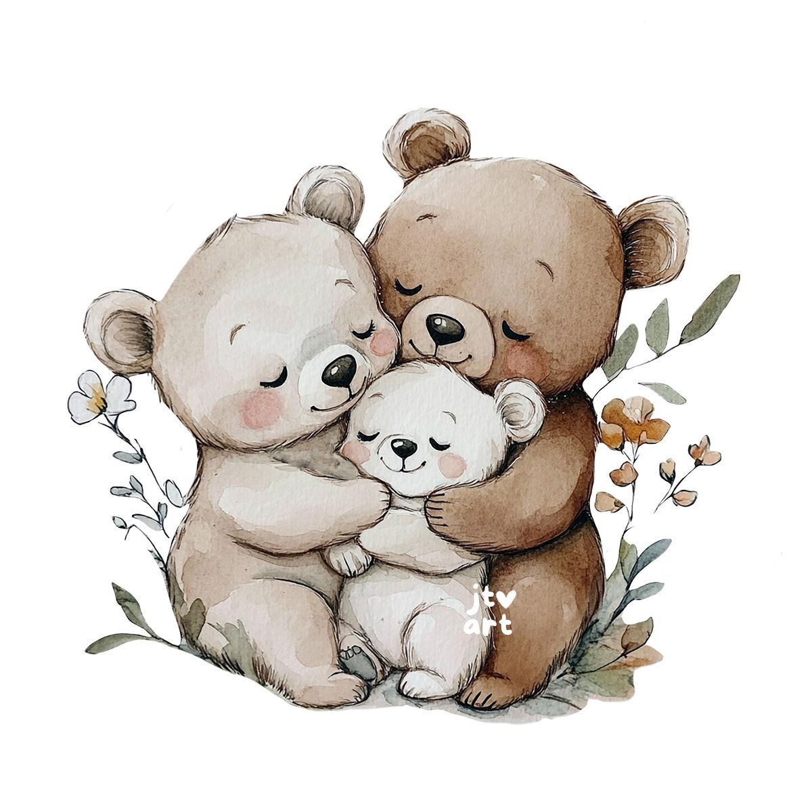

En este día especial, doy gracias a Dios por su amor y protección.
Los esperamos el 26 de julio del 2025, en la casita de mis papis.

Sus oraciones y amor me han guiado hasta este momento, gracias por ser mis padres.
Jose Manuel Rodríguez Barrera
Abigail Cruz Garrido

En este día tan especial, quiero agradecerles por su compromiso y por estar siempre presentes. Su amor y guía son un tesoro para mí.
Lino García Hernández
Crescencia Rodríguez Ventura

Con cariño, espero contar con tu presencia para celebrar este momento lleno de fe y amor.

¡Te esperamos con alegría!